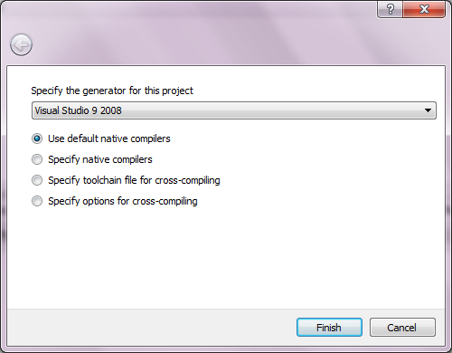

6. Building PCL’s dependencies from source on Windows¶
This tutorial explains how to build the Point Cloud Library needed dependencies from source on Microsoft Windows platforms, and tries to guide you through the download and the compilation process. As an example, we will be building the sources with Microsoft Visual Studio 2008 to get 32bit libraries. The procedure is almost the same for other compilers and for 64bit libraries.
Note
Don’t forget that all the dependencies must be compiled using the same compiler options and architecture specifications, i.e. you can’t mix 32 bit libraries with 64 bit libraries.
Contents
6.1. Requirements¶
In order to compile every component of the PCL library we need to download and compile a series of 3rd party library dependencies:
Boost version >= 1.46.1 (http://www.boost.org/)
used for shared pointers, and threading. mandatory
Eigen version >= 3.0.0 (http://eigen.tuxfamily.org/)
used as the matrix backend for SSE optimized math. mandatory
FLANN version >= 1.6.8 (http://www.cs.ubc.ca/research/flann/)
used in kdtree for fast approximate nearest neighbors search. mandatory
Visualization ToolKit (VTK) version >= 5.6.1 (http://www.vtk.org/)
used in visualization for 3D point cloud rendering and visualization. mandatory
googletest version >= 1.6.0 (http://code.google.com/p/googletest/)
used to build test units. optional
QHULL version >= 2011.1 (http://www.qhull.org/)
used for convex/concave hull decompositions in surface. optional
OpenNI version >= 1.1.0.25 (http://www.openni.org/)
used to grab point clouds from OpenNI compliant devices. optional
Qt version >= 4.6 (http://qt.digia.com/)
used for developing applications with a graphical user interface (GUI) optional
Note
Though not a dependency per se, don’t forget that you also need the CMake build system (http://www.cmake.org/), at least version 3.5.0. A Git client for Windows is also required to download the PCL source code.
6.2. Building dependencies¶
In this tutorial, we’ll be compiling these libraries versions:
Boost : 1.48.0
Flann : 1.7.1
Qhull : 2011.1
Qt : 4.8.0
VTK : 5.8.0
GTest : 1.6.0
Let’s unpack all our libraries in C:/PCL_dependencies so that it would like like:
C:/PCL_dependencies
C:/PCL_dependencies/boost-cmake
C:/PCL_dependencies/eigen
C:/PCL_dependencies/flann-1.7.1-src
C:/PCL_dependencies/gtest-1.6.0
C:/PCL_dependencies/qhull
C:/PCL_dependencies/VTK
Boost :
Let’s start with Boost. We will be using the CMake-able Boost project which provide a CMake based build system for Boost.
To build Boost, open the CMake-gui and fill in the fields:
Where is my source code: C:/PCL_dependencies/boost-cmake Where to build binaries: C:/PCL_dependencies/boost-cmake/build
Before clicking on “Configure”, click on “Add Entry” button in the top right of CMake gui, in the popup window, fill the fields as follows:
Name : LIBPREFIX Type : STRING Value : lib
Note
If you are using Visual Studio 2010, then add also these 3 CMake entries before clicking “Configure”:
Name : BOOST_TOOLSET Type : STRING Value : vc100 Name : BOOST_COMPILER Type : STRING Value : msvc Name : BOOST_COMPILER_VERSION Type : STRING Value : 10.0
Hit the “Configure” button and CMake will tell that the binaries folder doesn’t exist yet (e.g., C:/PCL_dependencies/boost-cmake/build) and it will ask for a confirmation.
Proceed and be sure to choose the correct “Generator” on the next window. So, we choose “Visual Studio 9 2008” generator.
Note
If you want to build 64 bit libraries, then choose “Visual Studio 9 2008 Win64” as generator.
By default, all of the Boost modules will be built. If you want to build only the required modules for PCL, then fill the BUILD_PROJECTS CMake entry (which is set to ALL by default) with a semicolon-seperated list of boost modules:
BUILD_PROJECTS : system;filesystem;date_time;iostreams;tr1;serialization
Also, uncheck the ENABLE_STATIC_RUNTIME checkbox. Then, click “Configure” again. If you get some errors related to Python, then uncheck WITH_PYTHON checkbox, and click “Configure” again. Now, in the CMake log, you should see something like:
Reading boost project directories (per BUILD_PROJECTS) + date_time + serialization + system + filesystem +-- optional python bindings disabled since PYTHON_FOUND is false. + tr1
Now, click “Generate”. A Visual Studio solution file will be generated inside the build folder (e.g. C:/PCL_dependencies/boost-cmake/build). Open the Boost.sln file, then right click on INSTALL project and choose Build. The `INSTALL`project will trigger the build of all the projects in the solution file, and then will install the build libraries along with the header files to the default installation folder (e.g. C:/Program Files (x86)/Boost).
Note
If you get some errors during the installation process, it could be caused by the UAC of MS Windows Vista or Seven. To fix this, close Visual Studio, right click on its icon on the Desktop or in the Start Menu, and choose “Run as administrator”. Then Open the Boost.sln file, and build the INSTALL project.
Eigen :
Eigen is a headers only library, so you can use the Eigen installer provided on the downloads page.
Flann :
Let’s move on to FLANN. Then open CMake-gui and fill in the fields:
Where is my source code: C:/PCL_dependencies/flann-1.7.1-src Where to build binaries: C:/PCL_dependencies/flann-1.7.1-src/build
Hit the “Configure” button. Proceed and be sure to choose the correct “Generator” on the next window. You can safely ignore any warning message about hdf5.
Now, on my machine I had to manually set the BUILD_PYTHON_BINDINGS and BUILD_MATLAB_BINDINGS to OFF otherwise it would not continue to the next step as it is complaining about unable to find Python and Matlab. Click on “Advanced mode” and find them, or alternatively, add those entries by clicking on the “Add Entry” button in the top right of the CMake-gui window. Add one entry named “BUILD_PYTHON_BINDINGS”, set its type to “Bool” and its value to unchecked. Do the same with the “BUILD_MATLAB_BINDINGS” entry.
Now hit the “Configure” button and it should work. Go for the “Generate” This will generate the required project files/makefiles to build the library. Now you can simply go to C:/PCL_dependencies/flann-1.7.1-src/build and proceed with the compilation using your toolchain. In case you use Visual Studio, you will find the Visual Studio Solution file in that folder.
Build the INSTALL project in release mode.
Note
If you don’t have a Python interpreter installed CMake would probably not allow you to generate the project files. To solve this problem you can install the Python interpreter (https://www.python.org/download/windows/) or comment the add_subdirectory( test ) line from C:/PCL_dependencies/flann-1.7.1-src/CMakeLists.txt .
QHull :
Setup the CMake fields with the qhull paths:
Where is my source code: C:/PCL_dependencies/qhull-2011.1 Where to build binaries: C:/PCL_dependencies/qhull-2011.1/build
Before clicking on “Configure”, click on “Add Entry” button in the top right of CMake gui, in the popup window, fill the fields as follows:
Name : CMAKE_DEBUG_POSTFIX Type : STRING Value : _d
Then click “Ok”. This entry will define a postfix to distinguish between debug and release libraries.
Then hit “Configure” twice and “Generate”. Then build the INSTALL project, both in debug and release configuration.
VTK :
Note
If you want to build PCL GUI tools, you need to build VTK with Qt support, so obviously, you need to build/install Qt before VTK.
To configure Qt, we need to have Perl installed on your system. If it is not, just download and install it from http://strawberryperl.com.
To build Qt from sources, download the source archive from Qt website. Unpack it some where on your disk (C:\Qt\4.8.0 e.g. for Qt 4.8.0). Then open a Visual Studio Command Prompt :
Click Start, point to All Programs, point to Microsoft Visual Studio 20XX, point to Visual Studio Tools, and then click Visual Studio Command Prompt if you are building in 32bit, or Visual Studio x64 Win64 Command Prompt if you are building in 64bit.
In the command prompt, cd to Qt directory:
prompt> cd c:\Qt\4.8.0
We configure a minimal build of Qt using the Open Source licence. If you need a custom build, adjust the options as needed:
prompt> configure -opensource -confirm-license -fast -debug-and-release -nomake examples -nomake demos -no-qt3support -no-xmlpatterns -no-multimedia -no-phonon -no-accessibility -no-openvg -no-webkit -no-script -no-scripttools -no-dbus -no-declarative
Now, let’s build Qt:
prompt> nmake
Now, we can clear all the intermediate files to free some disk space:
prompt> nmake clean
We’re done with Qt! But before building VTK, we need to set an environment variable:
QtDir = C:\Qt\4.8.0
and then, append %QtDir%\bin to your PATH environment variable.
Now, configure VTK using CMake (make sure to restart CMake after setting the environment variables). First, setup the CMake fields with the VTK paths, e.g.:
Where is my source code: C:/PCL_dependencies/VTK Where to build binaries: C:/PCL_dependencies/VTK/bin32
Then hit “Configure”. Check this checkbox and click “Configure”:
VTK_USE_QTMake sure CMake did find Qt by looking at QT_QMAKE_EXECUTABLE CMake entry. If not, set it to the path of qmake.exe, e.g. C:\Qt\4.8.0\bin\qmake.exe, then click “Configure”.
If Qt is found, then check this checkbox and click “Configure”:
VTK_USE_QVTK_QTOPENGLThen, click “Generate”, open the generated solution file, and build it in debug and release.
That’s it, we’re done with the dependencies!
GTest :
In case you want PCL tests (not recommended for users), you need to compile the googletest library (GTest). Setup the CMake fields as usual:
Where is my source code: C:/PCL_dependencies/gtest-1.6.0 Where to build binaries: C:/PCL_dependencies/gtest-1.6.0/bin32
Hit “Configure” and set the following options:
BUILD_SHARED_LIBS OFF gtest_force_shared_crt ON
Generate and build the resulting project.
6.3. Building PCL¶
Now that you built and installed PCL dependencies, you can follow the “Compiling PCL from source on Windows” tutorial to build PCL itself.